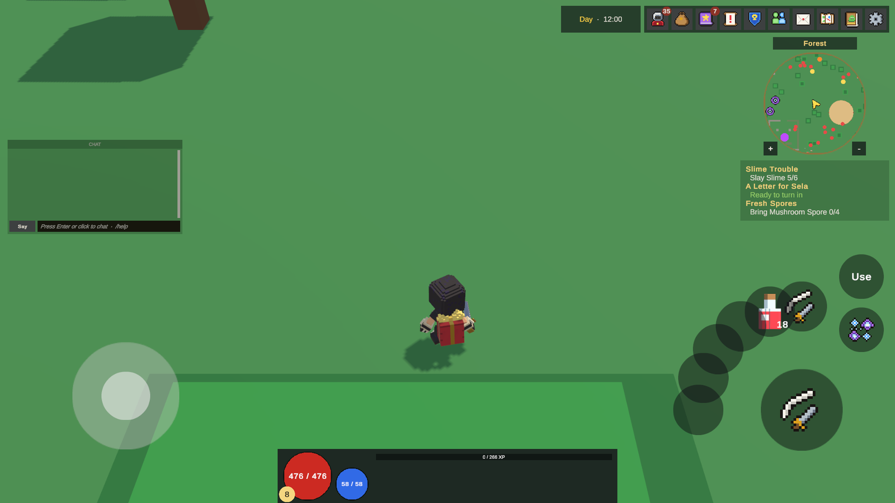

Controles de toque
Celulares e tablets jogam KitARPG com controles na tela: um analógico, um botão Attack, botões de habilidades e de poções, um botão Activate e toques no mundo. Esta página cobre quando eles aparecem, como funcionam em cada modo de controle, cada componente e campo do prefab e como mudar o layout.
O que são os controles de toque

Os controles de toque são um canvas feito a partir de um prefab, TouchControls.prefab, criado uma vez quando o jogo começa e mantido entre os mapas, como o HUD. Enquanto estão em uso, os modos de controle leem o analógico, os botões e os toques no mundo em vez do mouse e das teclas. Eles funcionam nos três modos de controle.
O mouse é ignorado enquanto eles estão em uso. Em um celular o Unity move um mouse simulado sob o primeiro dedo, o que de outra forma faria o personagem andar até debaixo do analógico.
Ligá-los
Abra KitARPG > Game Settings, seção Interface.
| Campo | O que faz | Padrão |
|---|---|---|
Input Layout (inputLayout) |
Com o que o jogo é jogado (tabela abaixo). | Auto |
Touch Controls Prefab (touchControlsPrefab) |
Canvas com os controles na tela. Vazio: sem controles de toque. | Amostra: Samples/Starter/Prefabs/TouchControls.prefab |
| Input Layout | O que faz |
|---|---|
| Auto | Controles de toque em celulares e tablets, incluindo o Device Simulator. Mouse e teclas em todo o resto. |
| Mouse And Keys | Nunca mostra os controles de toque. |
| Touch | Sempre mostra os controles de toque. As teclas do jogo não fazem nada: andar, atacar, esquivar, interagir e as teclas da barra rápida. |
| Touch And Keys | Mostra os controles de toque e mantém o teclado funcionando. Para tablets com teclado e para testar os controles de toque no editor. |
O layout é decidido quando o jogo começa: mudá-lo no modo Play não tem efeito até o próximo Play.
Os controles de toque são um recurso do cliente. O servidor verifica jogadores de toque exatamente como verifica jogadores de mouse, então um jogador (single player) e MMO se comportam igual. Builds de servidor nunca os criam.
Testá-los no editor
- Defina Input Layout como Touch And Keys.
- Aperte Play e entre. Os controles aparecem quando o seu personagem está no mundo.
- O mouse age como um dedo: arraste o analógico, clique nos botões, arraste no mundo.
Ou mantenha Auto e troque a Game view para o Simulator com um celular selecionado: o jogo então conta como mobile.
Jogar com toque
O layout da amostra
| Peça | Onde | O que faz |
|---|---|---|
| Analógico de movimento | Inferior esquerdo | Anda. Aparece onde o seu polegar toca em qualquer lugar da sua área e volta para casa quando você solta. Esmaecido enquanto não é tocado. |
| Botão Chat | Esquerda, acima do analógico | Mostra ou guarda o chat. O chat começa guardado; um selo vermelho conta as linhas que chegaram nesse meio-tempo (99+ acima de 99). |
| Attack | Inferior direito, grande | Ataca (veja as tabelas dos modos abaixo). |
| Skill 1 a 4 | Em arco ao redor de Attack: 1 embaixo à esquerda, 2 à esquerda, 3 e 4 acima | Casas 1 a 4 da barra rápida. Mostram o ícone da habilidade, a recarga diminuindo e os seus segundos. Acinzentadas quando não aprendidas ou sem mana. |
| Consumable | Canto superior esquerdo do arco | Casa 5 da barra rápida, para consumíveis como uma poção. Mostra quantos restam na bolsa. |
| Activate | Borda direita, acima do arco | Só aparece com espólio ou um NPC a até 4 m. Pega o espólio mais próximo ou fala com o NPC mais próximo, o mesmo que F. |
| X (área de cancelar) | Acima da skill 4 | Só aparece enquanto você arrasta a partir de um botão de habilidade. Soltar sobre ele cancela o lançamento. |
| O mundo | Em todo o resto | Toques, arrastos e pinças (veja abaixo). |
Os controles se escondem enquanto uma janela, a entrada do chat, uma caixa de diálogo, as configurações, o menu do jogo ou a tela de carregamento está aberta, e voltam quando ela fecha. O canvas deles fica abaixo do HUD, então as janelas do jogo os cobrem.
Não há botão de esquiva no layout da amostra. Só com Touch, os jogadores de câmera livre e terceira pessoa não conseguem esquivar até você adicionar um (veja Adicionar um botão).
Botões de habilidade e de consumível
- Toque em uma habilidade: lança-a no inimigo que a mira já cobre (terceira pessoa), ou senão no inimigo mais próximo dentro do alcance da habilidade mais 2 m. Sem nenhum inimigo por perto, ela vai à frente do personagem, até 4 m. Habilidades em si mesmo e em aliados são lançadas do jeito de sempre.
- Arraste a partir de um botão de habilidade: mira em vez disso. O arrasto é mapeado no chão ao redor do personagem como a câmera o vê; 160 pixels (em 1080p) de arrasto alcançam o alcance total da habilidade. A prévia da área da habilidade acompanha. Solte para lançar ali.
- Cancelar um arrasto: solte sobre o X, ou de volta sobre o botão (a menos de 24 pixels de onde você começou).
- Toque em um consumível: usa-o. Arrastar um consumível também mostra o X; soltar em outro lugar o usa.
- Segure um botão parado por 0,6 segundo, ou toque em um vazio: abre o seletor.
Os botões de toque são a mesma barra rápida que as teclas usam em um computador. A casa 1 em um celular é a casa 1 em um desktop, então um personagem mantém a sua configuração entre dispositivos. O cliente verifica aprendizado, recarga, lançamento e mana antes de enviar, e o servidor verifica tudo de novo (veja Habilidades).
O seletor de casa
O seletor é um painel sobre o jogo com o título "Choose a skill" (ou "Choose a consumable") e uma grade de ícones:
- Os botões de habilidade listam todas as habilidades que o personagem pode lançar: as habilidades da classe aprendidas até agora mais as habilidades aprendidas fora da classe. Habilidades passivas ficam de fora.
- O botão de consumível lista os consumíveis da bolsa, com o total de cada um.
- A entrada que o botão guarda agora tem um anel dourado.
- Escolher uma entrada que está em outra casa troca as duas, então nada aparece duas vezes.
- Empty this button o esvazia. X ou
Escapefecha o seletor.
Top-down com toque
| Toque | O que acontece |
|---|---|
| Analógico | Anda nessa direção, relativa à câmera, exatamente como WASD. |
| Um dedo pousado no mundo | O que um clique faz: ataca o monstro ou o jogador inimigo ali, pega espólio, fala com um NPC ou anda até lá. |
| Manter o dedo no mundo | Continua andando em direção a ele. Um segundo dedo para a caminhada e a transforma em uma pinça. |
| Tocar em outro jogador que não é inimigo | Abre o menu do jogador (não há botão direito). |
| Attack | Ataca o inimigo mais próximo a até 10 m. Segurado, passa para o próximo quando o atual cai. |
| Pinça | Dá zoom. |
Câmera livre e terceira pessoa com toque
| Toque | O que acontece |
|---|---|
| Analógico | Anda relativo à câmera. Empurrado até a metade, anda na metade da velocidade. |
| Arrastar um dedo no mundo | Gira a câmera, dentro do que as suas Camera Settings permitem. Em terceira pessoa a mira fica ligada o tempo todo. |
| Tocar no mundo | Pega o espólio, fala com o NPC ou com o coletor de impostos ali; senão abre o menu do jogador ali. |
| Attack | Golpeia o que a mira cobre (terceira pessoa) ou senão o inimigo mais próximo dentro do alcance de ataque mais 2 m. Segurado, continua golpeando. |
| Pinça | Dá zoom dentro da faixa de zoom da câmera. |
Na câmera livre em uma tela de toque não há ponteiro, então golpes e habilidades encontram a própria mira: o inimigo mais próximo, ou à frente.
O prefab
KitARPG > Starter > Build Scenes and Prefabs cria Samples/Starter/Prefabs/TouchControls.prefab quando ele não existe e o atribui a Touch Controls Prefab se esse campo estiver vazio. Um prefab existente nunca é substituído, então as suas edições sobrevivem a uma reconstrução da amostra.
As peças dele são prefabs aninhados em Samples/Starter/Prefabs/UI:
| Prefab | Usado para |
|---|---|
Touch Stick |
O analógico de movimento |
Touch Button |
Attack e Activate |
Touch Skill Button |
Os quatro botões de habilidade e o botão de consumível |
Touch Slot Picker |
O seletor |
Mude Touch Skill Button uma vez e os cinco botões acompanham. Abra TouchControls.prefab para mover, redimensionar, mudar o visual ou apagar qualquer peça.
O canvas raiz escala com o tamanho da tela a partir de uma referência de 1920 por 1080, combinando largura e altura meio a meio, e fica na ordem 9, abaixo do HUD.
Prefabs feitos por versões antigas do kit são reorganizados pela atualização do kit Touch controls: skills 1 to 4 and potion on 5, listada em Overview. Ela coloca as habilidades 1 a 4 e a poção ao redor de Attack e remove o antigo botão Dodge. Veja Atualizar o kit.
Componentes
Todos os componentes estão em Runtime/Client/Touch (namespace Blunnyn.KitARPG.Client).
TouchControls
Na raiz do prefab. Ele junta a entrada de cada peça e ajusta o HUD de desktop ao redor dos controles.
| Campo | O que faz | Padrão |
|---|---|---|
Group (group) |
Canvas group que esconde os controles enquanto uma janela, o chat ou uma caixa de diálogo está aberta. Vazio: o do mesmo objeto. | O da raiz |
Look Speed (lookSpeed) |
Quão rápido arrastar no mundo gira a câmera. Multiplicado pela sensibilidade da câmera e pela sensibilidade do mouse do jogador. | 1 |
Pinch Speed (pinchSpeed) |
Metros de zoom por 100 pixels de pinça. | 1,5 |
Hud Changes (hudChanges) |
Como o HUD de mouse e teclas é ajustado ao redor dos controles (abaixo). | Lista da amostra |
Cada Hud Change encontra uma peça do HUD pelo seu caminho dentro do prefab do HUD e a muda enquanto os controles de toque estão em uso. Tudo volta quando eles são desligados.
| Campo | O que faz | Padrão |
|---|---|---|
Path (path) |
Caminho dentro do HUD, como HUD/Chat Window/Chat. Um caminho que não é encontrado registra um aviso. |
Vazio |
Hide (hide) |
Escondida enquanto os controles de toque estão em uso. | Desligado |
Move (move) |
Aplica a âncora, o pivô, a posição e a escala abaixo. | Desligado |
Anchor (anchor) |
Ponto de âncora da peça movida. | (0.5, 0.5) |
Pivot (pivot) |
Pivô da peça movida. | (0.5, 0.5) |
Position (position) |
Posição ancorada. | (0, 0) |
Scale (scale) |
Escala, pelo menos 0,1. | 1 |
A lista da amostra esconde as casas da barra rápida de desktop Hotbar 1 a Hotbar 10 e a linha Hint, move o HUD do jogador para o centro inferior em 85 por cento e move o chat para a esquerda acima do botão Chat em 75 por cento. Se você renomear ou mover peças no seu HUD, atualize esses caminhos. Veja HUD e janelas.
TouchStick
Um analógico que escreve um eixo de -1 a 1 em cada lado.
| Campo | O que faz | Padrão |
|---|---|---|
Axis (axis) |
Eixo que ele escreve. Os modos andam com Move. |
Move |
Background (background) |
O anel em que o pino se move. | Definido no prefab |
Knob (knob) |
O pino. | Definido no prefab |
Radius (radius) |
Até onde o pino vai a partir do meio, em unidades do canvas. | 90 (92 na amostra) |
Dead Zone (deadZone) |
Parte do raio que conta como nenhum empurrão, de 0 a 0,9. Além dela o empurrão começa do zero, então uma inclinação pequena anda devagar. | 0,15 |
Floating (floating) |
O analógico aparece onde o polegar toca em vez de ficar parado. | Ligado |
Idle Alpha (idleAlpha) |
Opacidade enquanto não é tocado. | 0,5 |
Tocar em qualquer lugar dentro do retângulo do objeto do analógico o agarra. Na amostra essa área é de 560 por 480 no canto inferior esquerdo.
TouchButton
Um botão que os modos leem pelo seu id.
| Campo | O que faz | Padrão |
|---|---|---|
Id (id) |
Attack, Dodge, Interact, ou um id que o seu próprio código lê. |
Attack |
Show (show) |
Always, ou Near Interactable: só com espólio ou um NPC dentro de Near Range. | Always |
Near Range (nearRange) |
Metros para Near Interactable. | 4 |
Face (face) |
O gráfico que encolhe enquanto é segurado. | Definido no prefab |
Pressed Scale (pressedScale) |
Escala da face enquanto é segurado, de 0,5 a 1. | 0,9 |
On Press (onPress) |
Evento disparado ao ser apertado, para ligar um método sem código que leia o id. | Vazio |
O que cada id faz:
| Id | Top-down | Câmera livre e terceira pessoa |
|---|---|---|
Attack |
Ataca o inimigo mais próximo a até 10 m; segurado, passa para o próximo | Golpeia o inimigo da mira ou o mais próximo ao alcance; segurado, continua golpeando |
Dodge |
Nada | Esquiva |
Interact |
Pega ou fala com a coisa mais próxima a até 4 m | Igual |
TouchSkillButton
Lança a habilidade ou usa o item de uma casa da barra rápida.
| Campo | O que faz | Padrão |
|---|---|---|
Slot (slot) |
Casa da barra rápida, a partir de 0. A casa 0 é a tecla 1 em um computador. |
0 |
Holds (holds) |
Skills, Consumables ou Anything. Qualquer outra coisa na casa aparece como vazia. | Skills |
Icon (icon) |
Imagem que mostra a habilidade ou o item. | Definido no prefab |
Cooldown (cooldown) |
Imagem preenchida que diminui com a recarga. | Definido no prefab |
Cooldown Label (cooldownLabel) |
Segundos restantes: uma casa decimal abaixo de 10, segundos inteiros acima. | Definido no prefab |
Amount Label (amountLabel) |
Quantos do item restam na bolsa. | Definido no prefab |
Cancel Area (cancelArea) |
Mostrada enquanto se arrasta; soltar sobre ela não faz nada. | O X na amostra |
Face (face) |
O gráfico que encolhe enquanto é segurado. | Definido no prefab |
Aim Radius (aimRadius) |
Pixels em 1080p de arrasto que alcançam o alcance total da habilidade. | 160 |
Aim Start (aimStart) |
Pixels em 1080p de arrasto antes de o toque mirar em vez de tocar. | 24 |
Tap Reach (tapReach) |
Metros além do alcance da habilidade em que um toque ainda encontra um inimigo. | 2 |
Pick Seconds (pickSeconds) |
Segundos segurado parado que abrem o seletor. 0: só um botão vazio o abre. | 0,6 |
Unusable (unusable) |
Tom do ícone quando a habilidade não pode ser lançada ou o item acabou. | Cinza |
TouchSlotPicker
O painel que preenche os botões de habilidade. Cada entrada é uma cópia do botão modelo.
| Campo | O que faz | Padrão |
|---|---|---|
Panel (panel) |
Mostrado enquanto se escolhe. Dê a ele um fundo para que os toques não cheguem ao jogo. | Definido no prefab |
Title (title) |
"Choose a skill" ou "Choose a consumable". | Definido no prefab |
List (list) |
Onde as entradas vão, normalmente uma grade. | Definido no prefab |
Entry Template (entryTemplate) |
Botão copiado por entrada. Precisa de uma imagem filha Icon e de um rótulo Name; Amount é opcional. |
Definido no prefab |
Current Color (currentColor) |
Cor da entrada que o botão guarda agora. | Dourado |
Clear Button (clearButton) |
Esvazia o botão. | Empty this button |
Close Button (closeButton) |
Fecha o seletor. | X |
TouchChatButton
| Campo | O que faz | Padrão |
|---|---|---|
Start Hidden (startHidden) |
O chat começa guardado. | Ligado |
Badge (badge) |
Mostrado enquanto há linhas não lidas. | Definido no prefab |
Badge Label (badgeLabel) |
A contagem. | Definido no prefab |
Face (face) |
Imagem que fica mais clara enquanto o chat é mostrado. | Definido no prefab |
Open Color (openColor) |
Cor da face enquanto o chat é mostrado. | Dourado claro |
Quando os controles de toque somem, o chat volta como em um desktop.
TouchLookArea
Uma imagem transparente que cobre a tela inteira, atrás de todos os outros controles. Ela transforma os toques no mundo em entrada:
- Um dedo arrastando escreve o eixo
Look(gira a câmera na câmera livre e em terceira pessoa). - Dois dedos em pinça escrevem o eixo
Zoom(zoom em todos os modos). - Um toque curto é um toque simples (tap).
- Um dedo apoiado no mundo é um aperto, em direção ao qual o top-down anda.
| Campo | O que faz | Padrão |
|---|---|---|
Tap Travel (tapTravel) |
Pixels em 1080p que um dedo pode se mover e ainda contar como toque simples. | 18 |
Tap Seconds (tapSeconds) |
Segundos que um toque pode durar e ainda contar como toque simples. | 0,35 |
TouchModes
Mantém uma peça só em alguns modos de controle. Coloque-o em um botão que não faz sentido em um modo, como Dodge no top-down.
| Campo | O que faz | Padrão |
|---|---|---|
Modes (modes) |
Modos que mostram esta peça: TopDown, FreeCamera, ThirdPerson. Vazio: todos. |
Vazio |
Mudar o layout
Mover ou redimensionar um botão
- Abra
Samples/Starter/Prefabs/TouchControls.prefab. - Selecione a peça dentro de Actions (Attack, Activate, os botões de habilidade, o X) ou na raiz (Move Stick, Chat Button).
- Mova ou redimensione o Rect Transform dela. Mantenha os botões com pelo menos cerca de 100 unidades de largura na referência de 1920 por 1080 para que os polegares os acertem.
Adicionar um botão
Para dar aos jogadores de câmera livre e terceira pessoa um botão de esquiva:
- Abra
TouchControls.prefab. - Arraste
Prefabs/UI/Touch Buttonpara dentro de Actions e posicione-o. - Defina o Id dele como
Dodgee o rótulo como "Dodge". - Adicione um componente
TouchModescom ModesFreeCameraeThirdPerson, para que ele se esconda no top-down.
Adicionar um botão de habilidade
- Duplique um dos botões de habilidade dentro de Actions.
- Defina Slot como a próxima casa da barra rápida (5 para a 6ª casa) e Holds como preferir.
- Defina o Cancel Area dele como o X.
Um botão para o seu próprio código
Dê a um TouchButton um id próprio e leia-o, ou ligue um método a On Press:
if (TouchControls.Down("Jump")) Jump(); // pressed this frame
if (TouchControls.Held("Block")) Block(); // held
Vector2 move = TouchControls.Axis("Move"); // the stick
Verifique GameInstance.KeysOn antes de ler teclas próprias, para que elas fiquem desligadas só com Touch. Veja Modos de jogo no código.
Erros comuns
- Os controles de toque não aparecem no editor. Input Layout é Auto e a Game view não é o Simulator. Use Touch And Keys, ou o Simulator.
- Os controles de toque não aparecem em um celular. Touch Controls Prefab está vazio, ou Input Layout é Mouse And Keys.
- Uma peça do HUD se sobrepõe aos controles depois que você editou o HUD. Um caminho de Hud Change não corresponde mais. Procure "Touch controls: no ... in the HUD" no Console e corrija o caminho.
- Não há como esquivar em um celular. A amostra não tem botão de esquiva; adicione um como mostrado acima.
- Os botões de habilidade continuam vazios. Eles mostram o que a barra rápida guarda. Segure um botão ou toque nele vazio para escolher uma habilidade, ou coloque habilidades nas casas 1 a 4 da barra rápida em um computador antes.
- O teclado para de funcionar. Input Layout é Touch, que desliga as teclas do jogo de propósito. Use Touch And Keys para tablets com teclado.
- Mudar o layout no modo Play. O layout é lido quando o jogo começa. Pare e aperte Play de novo.
Páginas relacionadas
- Modos de controle: o que cada modo faz com mouse e teclas.
- HUD e janelas: o HUD em volta do qual os controles de toque se ajustam.
- Habilidades: alcances, áreas e alvos.
- Game Settings: a seção Interface.
- Configurações do jogador: sensibilidade e inversão do mouse, que também escalam o giro por toque.